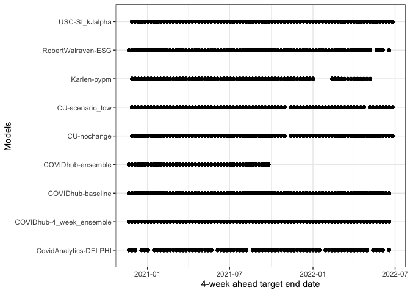
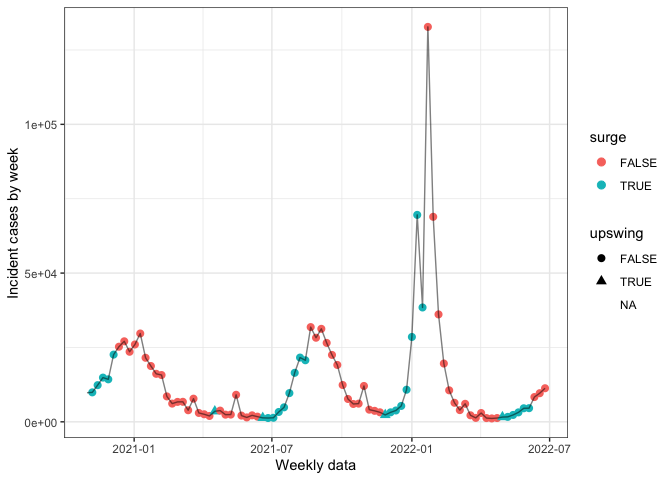
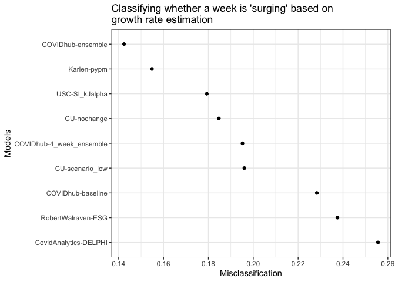
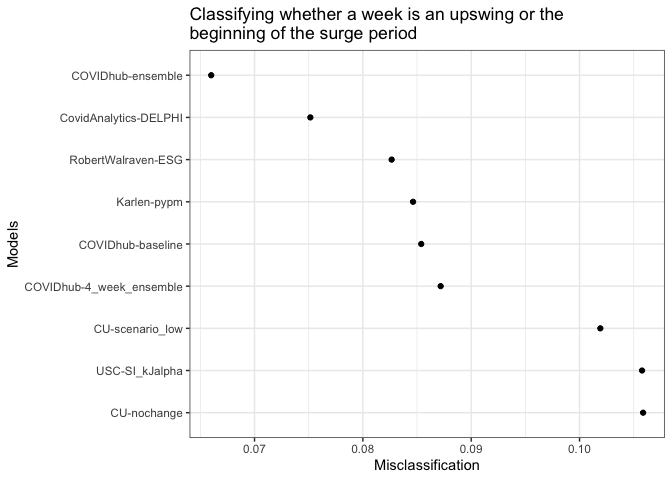
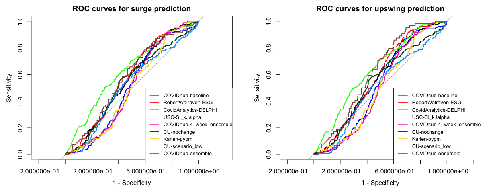
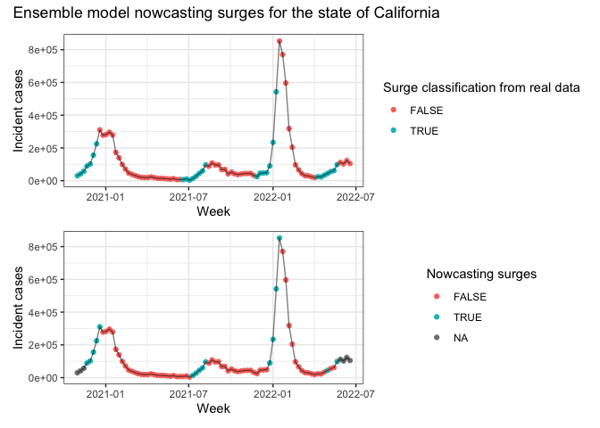
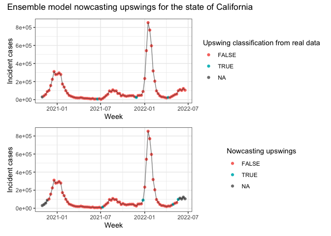

library(here)
library(covidcast)
library(epiprocess)
library(zoltr)
library(tidyverse)
library(ggsci)
library(tsibble)
library(covidHubUtils)
library(lubridate)
library(rlang)
library(patchwork)
library(pROC)
here::i_am(path = "notebooks/multiple-forecaster.Rmd")
source(here("R", "utils.R"))
# (settings <- get_settings(start_date = "2020-06-01", end_date = "2022-03-01"))
theme_set(theme_bw())First let’s set some parameters and constants.
d_range <- seq(ymd("2020-11-01"), ymd("2022-06-01"), by = 7)
curr_date <- "2022-06-01"
h <- 4
wk_ahead <- 1
inc_case_targets <- paste(1:h, "wk ahead inc case")
surge_thresh <- 0.5
min_inc <- 20Using covidHubUtils and zoltar we load
underlying data as well as forecasts for models available in the US hub.
Here we retrieve US states incident case forecasts 1-4 weeks in
advance.
models <- c("COVIDhub-baseline", "RobertWalraven-ESG", "CovidAnalytics-DELPHI", "USC-SI_kJalpha",
"COVIDhub-4_week_ensemble", "CU-nochange", "Karlen-pypm", "CU-scenario_low",
"COVIDhub-ensemble")
if (!file.exists(here("data", "pred_data_20220608.rds"))){
pred_case <- load_forecasts(
models = models,
dates = d_range,
date_window_size = 6,
locations = state.name,
types = "point",
targets = inc_case_targets,
source = "zoltar",
verbose = FALSE,
as_of = curr_date,
hub = c("US")
)
saveRDS(pred_case, file = here("data", "pred_data_20220608.rds"))
} else {
pred_case <- readRDS(file = here("data", "pred_data_20220608.rds"))
}
ggplot(pred_case %>% filter(horizon == 4), aes(x = model, y = target_end_date)) +
geom_point() +
labs(x = "Models", y = "4-week ahead target end date") +
coord_flip()
Let’s load the corresponding truth data
truth_data <- load_truth(
truth_source = "JHU",
target_variable = "inc case",
locations = state.name
)
true_range <- pred_case %>% pull(target_end_date) %>%
unique() %>%
lubridate::as_date()
# convert truth_data to epi_df
truth_epidf <- truth_data %>%
select(-c(model, location, target_variable, location_name,
abbreviation, full_location_name)) %>%
dplyr::rename("time_value" = "target_end_date") %>%
filter(time_value %in% true_range) %>%
as_epi_df(geo_type = "state")
truth_epidf## An `epi_df` object, with metadata:
## * geo_type = state
## * time_type = day
## * as_of = 2022-06-28 11:29:15
##
## # A tibble: 4,350 × 5
## geo_value time_value value population geo_type
## * <chr> <date> <dbl> <dbl> <chr>
## 1 al 2020-10-31 9782 4903185 state
## 2 al 2020-11-07 9905 4903185 state
## 3 al 2020-11-14 12325 4903185 state
## 4 al 2020-11-21 14865 4903185 state
## 5 al 2020-11-28 14285 4903185 state
## 6 al 2020-12-05 22596 4903185 state
## 7 al 2020-12-12 25252 4903185 state
## 8 al 2020-12-19 27063 4903185 state
## 9 al 2020-12-26 23554 4903185 state
## 10 al 2021-01-02 26000 4903185 state
## # … with 4,340 more rowsWe define surge for a given date using relative change growth rate
formulation times the bandwidth using the implementation from
epiprocess:
\[\frac{1}{h} * \left(\frac{\bar{B}}{\bar{A}} - 1\right) = \frac{1}{h} * \left(\frac{\bar{B} - \bar{A}}{\bar{A}}\right) = \\ \frac{1}{h} * \left(\frac{(h)^{-1}\left(\sum_{t = T+1}^{T + h} Y_t - \sum_{t = T+1-h}^{T} Y_t\right)}{(h)^{-1}\sum_{t = T+1-h}^{T} Y_t}\right) = \frac{1}{h} R^{h}_{T + h}\]
A surge is defined for time-point \(T\) as the difference in cumulative incident cases between the periods of \(T+1\) and \(T+h\) and \(T\) and \(T-h\). As such, an \(h\)-week ahead forecaster is a nowcaster of whether or not we’re currently in a surge. Here, we classify for each week whether it is a surge based on it’s \(h\)-week-ahead and \(h\)-week-prior data. An upswing is defined as the point at the beginning of a surge. Here we used the threshold of 50% increase in cumulative difference in the \(h\)-week-ahead compared to \(h\)-week-prior data.
truth_epidf <- truth_epidf %>%
mutate(gr = growth_rate(y = value, method = "rel_change", h = h) * h) %>%
mutate(surge = case_when(
gr >= surge_thresh & value >= min_inc ~ TRUE,
TRUE ~ FALSE
))
truth_epidf <- truth_epidf %>%
group_by(geo_value) %>% epi_slide(~{
bef <- .x$surge[1]
focal <- .x$surge[2]
if (is.na(focal)){
out <- NA
} else {
if (bef == FALSE & focal == TRUE){
out <- TRUE
} else if (bef == TRUE & focal == FALSE){
out <- FALSE
} else {
out <- FALSE
}
}
return(out)
}, n = 2 * 7 * 1, align = "right", new_col_name = "upswing")
ggplot(truth_epidf %>% filter(geo_value == "al"), aes(x = time_value, y = value)) +
geom_point(aes(col = surge, shape = upswing), size = 2.5) + geom_line(alpha = 0.5) +
labs(x = "Weekly data", y = "Incident cases by week")## Warning: Removed 1 rows containing missing values (geom_point).
Here we use the following procedures for a focal timepoint \(T\) and bandwidth \(h\) (for example, 4)
forecast <- pred_case %>% dplyr::rename("pred" = value, "time_value" = target_end_date)
actual <- truth_epidf %>% dplyr::rename("obs" = value)
combined <- left_join(actual, forecast) %>%
select(geo_value, population, geo_type, obs, pred,
time_value, forecast_date, model, horizon, surge, upswing)## Joining, by = c("geo_value", "time_value", "population", "geo_type")combined <- combined %>% ungroup() %>% as_epi_df()
head(combined)## # A tibble: 6 × 11
## geo_value time_value population geo_type obs pred forecast_date model horizon surge upswing
## <chr> <date> <dbl> <chr> <dbl> <dbl> <date> <chr> <chr> <lgl> <lgl>
## 1 ak 2020-10-31 731545 state 2812 1725 2020-10-26 COVIDhub-baseline 1 FALSE NA
## 2 ak 2020-10-31 731545 state 2812 1557. 2020-10-26 RobertWalraven-ESG 1 FALSE NA
## 3 ak 2020-10-31 731545 state 2812 1039 2020-10-26 CovidAnalytics-DELPHI 1 FALSE NA
## 4 ak 2020-10-31 731545 state 2812 1664 2020-10-26 COVIDhub-4_week_ensemble 1 FALSE NA
## 5 ak 2020-10-31 731545 state 2812 1664 2020-10-26 COVIDhub-ensemble 1 FALSE NA
## 6 ak 2020-11-07 731545 state 2951 1725 2020-10-26 COVIDhub-baseline 2 FALSE FALSELet’s define the slide function
# this function combines real case counts from time points t-h to t and forecasted
# case counts from t+1 to t+h. Growth rate at time t is then estimated using the relative change
# method
mismatch_slide <- function(slide_df, h){
query_dates <- slide_df %>% pull(time_value) %>% unique()
req_len <- h * 2
# if not enough weeks for prediction
if (length(query_dates) != req_len){
# this is an exception for when the dates are truncated at the end and beginning of the interval
out <- NA_real_
} else {
# true dates, pred dates and ref dates
t_date <- query_dates[1:(req_len - h)]
ref <- tail(t_date, n = 1)
p_date <- query_dates[(req_len - h + 1):req_len]
#print(query_dates)
#print(ref)
f_date <- slide_df %>%
filter(time_value == head(p_date, n = 1) & horizon == 1) %>%
pull(forecast_date) %>% unique()
if (length(f_date) == 0){
# exceptions where there are no relevant forecasts for when the time step 1 ahead of
# the reference date
out <- NA_real_
} else {
# get predicted values
pred <- slide_df %>% filter(forecast_date == f_date) %>%
dplyr::pull(pred)
if (length(pred) < h){
# this exception is when the model does not forecast $h$ weeks in advance
# (e.g. h = 4 but horizon only extends to 3)
out <- NA_real_
} else {
# get true values
obs <- slide_df %>% filter(time_value %in% t_date) %>%
select(time_value, obs) %>%
distinct() %>% pull(obs)
# put everything in an epi_df for posterity
new_df <- tibble(
time_value = c(t_date, p_date),
value = c(obs, pred),
geo_value = "placeholder"
) %>% as_epi_df()
out <- new_df %>%
mutate(gr_pred = growth_rate(y = value, h = h, method = "rel_change") * h) %>%
filter(time_value == ref) %>% pull(gr_pred)
}
}
}
return(out)
}Let’s use this with epi_slide function and loop through
all the models
if (!file.exists(here("output", "calc_gr.rds"))){
# this step takes about 20 minutes
begin <- Sys.time()
gradient_calc <- combined %>%
group_by(geo_value, model) %>%
epi_slide(~mismatch_slide(.x, h = h), n = 2 * 7 * h, align = "center", new_col_name = "pred_gr") %>%
dplyr::ungroup() %>%
dplyr::select(-c(forecast_date, horizon, pred)) %>% distinct()
end <- Sys.time()
print(end - begin)
saveRDS(gradient_calc, file = here("output", "calc_gr.rds"))
} else {
gradient_calc <- readRDS(file = here("output", "calc_gr.rds"))
}Classify each time point as either a surge/upswing or not based on established criteria.
gradient_classif <- gradient_calc %>%
mutate(surge_pred = case_when(
pred_gr >= surge_thresh & obs >= min_inc ~ TRUE,
is.na(pred_gr) ~ NA,
TRUE ~ FALSE
)) %>% group_by(geo_value, model) %>%
epi_slide(~{
bef <- .x$surge_pred[1]
focal <- .x$surge_pred[2]
if (is.na(focal) | is.na(bef)){
out <- NA
} else {
if (bef == FALSE & focal == TRUE){
out <- TRUE
} else if (bef == TRUE & focal == FALSE){
out <- FALSE
} else {
out <- FALSE
}
}
return(out)
}, n = 2 * 7 * 1, align = "right", new_col_name = "upswing_pred")
head(gradient_classif)## # A tibble: 6 × 11
## geo_value model time_value population geo_type obs surge upswing pred_gr surge_pred upswing_pred
## <chr> <chr> <date> <dbl> <chr> <dbl> <lgl> <lgl> <dbl> <lgl> <lgl>
## 1 ak CovidAnalytics-DELPHI 2020-10-31 731545 state 2812 FALSE NA NA NA NA
## 2 ak CovidAnalytics-DELPHI 2020-11-07 731545 state 2951 FALSE FALSE NA NA NA
## 3 ak CovidAnalytics-DELPHI 2020-11-14 731545 state 3846 FALSE FALSE NA NA NA
## 4 ak CovidAnalytics-DELPHI 2020-11-21 731545 state 4080 FALSE FALSE 0.346 FALSE NA
## 5 ak CovidAnalytics-DELPHI 2020-11-28 731545 state 4225 FALSE FALSE 0.0266 FALSE FALSE
## 6 ak CovidAnalytics-DELPHI 2020-12-05 731545 state 4829 FALSE FALSE -0.258 FALSE FALSEPerform evaluation
surge_eval <- map_dfr(models, ~{
misclass_surge <- gradient_classif %>% ungroup() %>%
filter(model == .x) %>%
filter(!is.na(surge_pred)) %>%
summarise(misclass = mean(surge != surge_pred),
sens = sum(surge & surge_pred)/sum(surge),
spec = sum(!surge & !surge_pred)/sum(!surge))
pmod <- pROC::roc(surge ~ pred_gr, data = gradient_classif %>% filter(model == .x),
subset = !is.na(surge_pred))
misclass_surge <- mutate(misclass_surge, auc = round(as.numeric(pmod$auc),3), type = "surge")
misclass_surge <- misclass_surge %>% mutate(model = .x)
})
upswing_eval <- map_dfr(models, ~{
misclass_upswing <- gradient_classif %>% ungroup() %>%
filter(model == .x) %>%
filter(!is.na(upswing_pred)) %>%
summarise(misclass = mean(upswing != upswing_pred),
upswing_prev = mean(upswing),
sens = sum(upswing & upswing_pred)/sum(upswing),
spec = sum(!upswing & !upswing_pred)/sum(!upswing))
pmod <- pROC::roc(upswing ~ pred_gr, data = gradient_classif %>% filter(model == .x),
subset = !is.na(upswing_pred))
misclass_upswing <- mutate(misclass_upswing, auc = round(as.numeric(pmod$auc),3), type = "upswing")
misclass_upswing <- misclass_upswing %>% mutate(model = .x)
})
saveRDS(upswing_eval, file = here("output", "upswing_eval.rds"))
saveRDS(surge_eval, file = here("output", "surge_eval.rds"))
knitr::kable(surge_eval)| misclass | sens | spec | auc | type | model |
|---|---|---|---|---|---|
| 0.2283544 | 0.3076923 | 0.9700036 | 0.848 | surge | COVIDhub-baseline |
| 0.2375130 | 0.2826283 | 0.9575558 | 0.796 | surge | RobertWalraven-ESG |
| 0.2556164 | 0.2063179 | 0.9510808 | 0.542 | surge | CovidAnalytics-DELPHI |
| 0.1792767 | 0.5835498 | 0.9205539 | 0.848 | surge | USC-SI_kJalpha |
| 0.1951899 | 0.4167371 | 0.9707264 | 0.870 | surge | COVIDhub-4_week_ensemble |
| 0.1846753 | 0.5290043 | 0.9380334 | 0.842 | surge | CU-nochange |
| 0.1548223 | 0.7113885 | 0.8856873 | 0.880 | surge | Karlen-pypm |
| 0.1960526 | 0.4709507 | 0.9459459 | 0.836 | surge | CU-scenario_low |
| 0.1424390 | 0.5243446 | 0.9749340 | 0.871 | surge | COVIDhub-ensemble |
knitr::kable(upswing_eval)| misclass | upswing_prev | sens | spec | auc | type | model |
|---|---|---|---|---|---|---|
| 0.0853846 | 0.0451282 | 0.0568182 | 0.9551557 | 0.518 | upswing | COVIDhub-baseline |
| 0.0826558 | 0.0436314 | 0.0062112 | 0.9589119 | 0.575 | upswing | RobertWalraven-ESG |
| 0.0751515 | 0.0463636 | 0.0065359 | 0.9694948 | 0.637 | upswing | CovidAnalytics-DELPHI |
| 0.1057692 | 0.0452183 | 0.1954023 | 0.9273272 | 0.559 | upswing | USC-SI_kJalpha |
| 0.0871795 | 0.0451282 | 0.0511364 | 0.9535446 | 0.501 | upswing | COVIDhub-4_week_ensemble |
| 0.1058667 | 0.0466667 | 0.1542857 | 0.9303497 | 0.541 | upswing | CU-nochange |
| 0.0846325 | 0.0378619 | 0.1176471 | 0.9467593 | 0.496 | upswing | Karlen-pypm |
| 0.1019178 | 0.0413699 | 0.0662252 | 0.9339811 | 0.502 | upswing | CU-scenario_low |
| 0.0660000 | 0.0320000 | 0.0156250 | 0.9643595 | 0.619 | upswing | COVIDhub-ensemble |
Visualize performance values
ggplot(surge_eval, aes(y = misclass, x = reorder(model, -misclass))) +
coord_flip() + geom_point() +
labs(x = "Models", y = "Misclassification", title = str_wrap("Classifying whether a week is 'surging' based on growth rate estimation", width = 50))
ggplot(upswing_eval, aes(y = misclass, x = reorder(model, -misclass))) +
coord_flip() + geom_point() +
labs(x = "Models", y = "Misclassification", title = str_wrap("Classifying whether a week is an upswing or the beginning of the surge period", width = 50))
ROC curves for upswing and surge calculations
library(pals)
colors <- pals::glasbey(n = 9)
par(mfrow = c(1,2))
suppressMessages(mods <- map(models, ~{
pROC::roc(upswing ~ pred_gr, data = gradient_classif %>% filter(model == .x),
subset = !is.na(surge_pred), verbose = FALSE)
}))
names(mods) <- models
plot(mods[[1]], col = colors[1], legacy.axes = TRUE, main = "ROC curves for surge prediction")
for (i in 2:length(mods)){
plot(mods[[i]], add = TRUE, col = colors[i])
}
legend(0.4,0.5,legend=models, col = colors, lty = 1, cex = 0.8)
suppressMessages(mods <- map(models, ~{
pROC::roc(upswing ~ pred_gr, data = gradient_classif %>% filter(model == .x),
subset = !is.na(upswing_pred), verbose = FALSE)
}))
names(mods) <- models
plot(mods[[1]], col = colors[1], legacy.axes = TRUE, main = "ROC curves for upswing prediction")
for (i in 2:length(mods)){
plot(mods[[i]], add = TRUE, col = colors[i])
}
legend(0.4,0.5,legend=models, col = colors, lty = 1, cex = 0.8)
ensemble <- gradient_classif %>% filter(model == models[5])
p1 <- ggplot(ensemble %>% filter(geo_value == "ca"),
aes(x = time_value, y = obs)) + geom_point(aes(col = surge)) + geom_line(alpha = 0.5) +
labs(x = "Week", col = "Surge classification from real data", y = "Incident cases")
p2 <- ggplot(ensemble %>% filter(geo_value == "ca"), aes(x = time_value, y = obs)) +
geom_point(aes(col = surge_pred)) +
geom_line(alpha = 0.5) +
labs(x = "Week", col = "Nowcasting surges", y = "Incident cases")
p1 / p2 + plot_annotation("Ensemble model nowcasting surges for the state of California")
Plotting incident cases and surge classification
p1 <- ggplot(ensemble %>% filter(geo_value == "ca"),
aes(x = time_value, y = obs)) +
geom_point(aes(col = upswing)) +
geom_line(alpha = 0.5) +
labs(x = "Week", col = "Upswing classification from real data", y = "Incident cases")
p2 <- ggplot(ensemble %>% filter(geo_value == "ca"), aes(x = time_value, y = obs)) +
geom_point(aes(col = upswing_pred)) +
geom_line(alpha = 0.5) +
labs(x = "Week", col = "Nowcasting upswings", y = "Incident cases")
p1 /p2 + plot_annotation(title = "Ensemble model nowcasting upswings for the state of California")